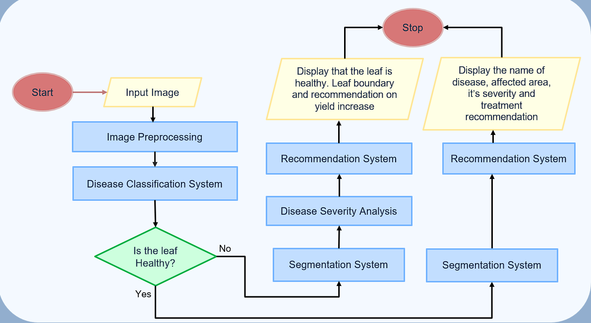

<!DOCTYPE html>
<html lang="en">

<head>
  <meta charset="UTF-8" />
  <meta name="viewport" content="width=device-width, initial-scale=1.0" />
  <link rel="icon" type="image/svg+xml" href="./URLicon.png" />
  <title>Krishi Raksha</title>
  <script src="https://cdn.tailwindcss.com"></script>
  <script src="https://cdn.jsdelivr.net/npm/react@18.2.0/umd/react.production.min.js"></script>
  <script src="https://cdn.jsdelivr.net/npm/react-dom@18.2.0/umd/react-dom.production.min.js"></script>
  <script src="https://cdn.jsdelivr.net/npm/babel-standalone@6.26.0/babel.min.js"></script>
  <link rel="stylesheet" href="https://cdnjs.cloudflare.com/ajax/libs/font-awesome/6.5.0/css/all.min.css"
    integrity="sha512-Dt8fP0qL9QzT5W5mGkQXgYXUpHpxYME5z3XkkkLOHyDUtU7EFORbiKrkpErvh9Hwl3FvFc0YBQeJ3KJptCF/Ng=="
    crossorigin="anonymous" referrerpolicy="no-referrer" />
  <style>
    @import url('https://fonts.googleapis.com/css2?family=Inter:wght@300;400;500;600;700;800&display=swap');

    * {
      font-family: 'Inter', sans-serif;
    }

    .gradient-bg {
      background: linear-gradient(135deg, #065f46 0%, #059669 50%, #10b981 100%);
    }

    .hero-gradient {
      background: linear-gradient(135deg, #f0fdf4 0%, #dcfce7 50%, #bbf7d0 100%);
    }

    .glass-effect {
      background: rgba(255, 255, 255, 0.1);
      backdrop-filter: blur(10px);
      border: 1px solid rgba(255, 255, 255, 0.2);
    }

    .card-hover {
      transition: all 0.3s ease;
    }

    .card-hover:hover {
      transform: translateY(-8px);
      box-shadow: 0 20px 40px rgba(0, 0, 0, 0.1);
    }

    .floating-animation {
      animation: float 6s ease-in-out infinite;
    }

    @keyframes float {

      0%,
      100% {
        transform: translateY(0px);
      }

      50% {
        transform: translateY(-20px);
      }
    }

    .tech-badge {
      background: linear-gradient(45deg, #3b82f6, #8b5cf6);
      color: white;
      padding: 4px 12px;
      border-radius: 20px;
      font-size: 0.75rem;
      font-weight: 600;
      margin: 2px;
      display: inline-block;
    }

    .stats-number {
      background: linear-gradient(45deg, #059669, #10b981);
      -webkit-background-clip: text;
      -webkit-text-fill-color: transparent;
      background-clip: text;
    }

    #watermark {
      position: fixed;
      bottom: 50px;
      right: 50px;
      color: rgba(0, 0, 0, 0.05);
      font-size: 48px;
      transform: rotate(-45deg);
      pointer-events: none;
      z-index: 0;
    }

    .smooth-scroll {
      scroll-behavior: smooth;
    }
  </style>
</head>

<body class="bg-gray-50 text-gray-800 smooth-scroll">
  <div id="root"></div>

  <script type="text/babel">
    function Navbar() {
      const [isScrolled, setIsScrolled] = React.useState(false);

      React.useEffect(() => {
        const handleScroll = () => {
          setIsScrolled(window.scrollY > 50);
        };
        window.addEventListener('scroll', handleScroll);
        return () => window.removeEventListener('scroll', handleScroll);
      }, []);

      return (
        <nav className={`fixed w-full top-0 z-50 transition-all duration-300 ${isScrolled ? 'bg-white/95 backdrop-blur-md shadow-lg' : 'bg-transparent'
          }`}>
          <div className="container mx-auto flex justify-between items-center max-w-7xl px-6 py-4">
            <div className="flex items-center space-x-3">

              <div className={`text-2xl font-bold transition-colors ${isScrolled ? 'text-gray-800' : 'text-white'
                }`}>
                Krishi Raksha
              </div>
            </div>
            <div className="hidden md:flex space-x-8">
              <a href="#home" className={`transition-colors hover:text-green-600 ${isScrolled ? 'text-gray-700' : 'text-white hover:text-green-200'
                }`}>Home</a>
              <a href="#features" className={`transition-colors hover:text-green-600 ${isScrolled ? 'text-gray-700' : 'text-white hover:text-green-200'
                }`}>Features</a>
              <a href="#how-it-works" className={`transition-colors hover:text-green-600 ${isScrolled ? 'text-gray-700' : 'text-white hover:text-green-200'
                }`}>Technology</a>
              <a href="#about" className={`transition-colors hover:text-green-600 ${isScrolled ? 'text-gray-700' : 'text-white hover:text-green-200'
                }`}>Research</a>
              <a href="#team" className={`transition-colors hover:text-green-600 ${isScrolled ? 'text-gray-700' : 'text-white hover:text-green-200'
                }`}>Team</a>
            </div>
            <a href="https://krishi-raksha-1.vercel.app/"
              className="bg-gradient-to-r from-green-600 to-green-700 text-white px-6 py-3 rounded-full font-semibold hover:from-green-700 hover:to-green-800 transition-all duration-300 shadow-lg hover:shadow-xl">
              Launch App
            </a>
          </div>
        </nav>
      );
    }

    function Hero() {
      return (
        <section id="home" className="min-h-screen flex items-center justify-center gradient-bg relative overflow-hidden">
          {/* Background Pattern */}
          <div className="absolute inset-0 opacity-10">
            <div className="absolute top-1/4 left-1/4 w-72 h-72 bg-white rounded-full blur-3xl"></div>
            <div className="absolute bottom-1/4 right-1/4 w-96 h-96 bg-white rounded-full blur-3xl"></div>
          </div>

          <div className="container mx-auto text-center px-6 max-w-6xl relative z-10">
            <div className="mb-6">
              <span className="inline-block bg-white/20 backdrop-blur-sm text-white px-4 py-2 rounded-full text-sm font-medium mb-4">
                🌱 AI-Powered Agricultural Innovation
              </span>
            </div>

            <h1 className="text-5xl md:text-7xl font-bold mb-8 leading-tight text-white">
              Tea Disease Detection
              <span className="block text-green-200">with AI Precision</span>
            </h1>

            <p className="text-xl md:text-2xl mb-12 text-green-100 max-w-4xl mx-auto leading-relaxed">
              Revolutionary deep learning system combining ConvNeXt classification, YOLOv8 segmentation,
              and RAG-based treatment recommendations to transform tea cultivation.
            </p>

            {/* Stats */}
            <div className="grid grid-cols-1 md:grid-cols-3 gap-8 mb-12 max-w-3xl mx-auto">
              <div className="glass-effect rounded-2xl p-6">
                <div className="text-3xl font-bold text-white mb-2">98%</div>
                <div className="text-green-200">Classification Accuracy</div>
              </div>
              <div className="glass-effect rounded-2xl p-6">
                <div className="text-3xl font-bold text-white mb-2">92%</div>
                <div className="text-green-200">Segmentation Accuracy</div>
              </div>
              <div className="glass-effect rounded-2xl p-6">
                <div className="text-3xl font-bold text-white mb-2">7</div>
                <div className="text-green-200">Disease Types</div>
              </div>
            </div>

            <div className="flex flex-col sm:flex-row gap-4 justify-center">
              <a href="https://krishi-raksha-1.vercel.app/"
                className="bg-white text-green-700 px-8 py-4 rounded-full text-lg font-semibold hover:bg-gray-100 transition-all duration-300 shadow-2xl hover:shadow-3xl transform hover:scale-105">
                Try Detection Tool
              </a>
              <a href="#how-it-works"
                className="border-2 border-white text-white px-8 py-4 rounded-full text-lg font-semibold hover:bg-white hover:text-green-700 transition-all duration-300">
                View Technology
              </a>
            </div>
          </div>
        </section>
      );
    }

    function Features() {
      const features = [
        {
          title: "Advanced Disease Classification",
          description: "ConvNeXT architecture with hierarchical feature extraction achieves 98% accuracy in identifying tea leaf diseases including anthracnose, brown blight, and algal leaf spot.",
          icon: "🔬",
          tech: ["ConvNeXt", "Deep Learning", "CNN"],
          gradient: "from-blue-500 to-purple-600"
        },
        {
          title: "Pixel-Level Severity Analysis",
          description: "YOLOv8-powered real-time segmentation isolates diseased regions and calculates severity percentages with 92% coverage accuracy through refined mask processing.",
          icon: "📊",
          tech: ["YOLOv8", "Segmentation", "Computer Vision"],
          gradient: "from-green-500 to-teal-600"
        },
        {
          title: "RAG-Based Treatment Recommendations",
          description: "Retrieval-Augmented Generation model combines disease database with Google Gemini AI to provide context-aware, tailored treatment strategies.",
          icon: "🎯",
          tech: ["RAG", "Google Gemini", "Astra DB"],
          gradient: "from-orange-500 to-red-600"
        },
      ];

      return (
        <section id="features" className="py-24 bg-white">
          <div className="container mx-auto px-6 max-w-7xl">
            <div className="text-center mb-16">
              <h2 className="text-4xl md:text-5xl font-bold mb-6">Advanced AI Capabilities</h2>
              <p className="text-xl text-gray-600 max-w-3xl mx-auto">
                Our system leverages cutting-edge machine learning technologies to deliver unprecedented accuracy in tea disease management.
              </p>
            </div>

            <div className="grid grid-cols-1 lg:grid-cols-3 gap-8">
              {features.map((feature, index) => (
                <div key={index} className="card-hover bg-white rounded-2xl shadow-lg hover:shadow-2xl p-8 border border-gray-100">
                  <div className={`w-16 h-16 bg-gradient-to-r ${feature.gradient} rounded-2xl flex items-center justify-center text-2xl mb-6`}>
                    {feature.icon}
                  </div>
                  <h3 className="text-2xl font-bold mb-4 text-gray-800">{feature.title}</h3>
                  <p className="text-gray-600 leading-relaxed mb-6">{feature.description}</p>
                  <div className="flex flex-wrap gap-2">
                    {feature.tech.map((tech, idx) => (
                      <span key={idx} className="tech-badge">{tech}</span>
                    ))}
                  </div>
                </div>
              ))}
            </div>
          </div>
        </section>
      );
    }

    function HowItWorks() {
      const steps = [
        {
          step: "01",
          title: "Image Upload",
          description: "Farmer uploads tea leaf image via web interface",
          icon: "📤"
        },
        {
          step: "02",
          title: "ConvNeXt Classification",
          description: "AI identifies disease type with 98% accuracy",
          icon: "🧠"
        },
        {
          step: "03",
          title: "YOLOv8 Segmentation",
          description: "Pixel-level analysis calculates severity percentage",
          icon: "🎯"
        },
        {
          step: "04",
          title: "RAG Recommendations",
          description: "Context-aware treatment strategies generated",
          icon: "💡"
        }
      ];

      return (
        <section id="how-it-works" className="py-24 bg-gray-50">
          <div className="container mx-auto px-6 max-w-7xl">
            <div className="text-center mb-16">
              <h2 className="text-4xl md:text-5xl font-bold mb-6">How Our AI System Works</h2>
              <p className="text-xl text-gray-600 max-w-3xl mx-auto">
                From image upload to treatment recommendation in four intelligent steps
              </p>
            </div>

            {/* Process Steps */}
            <div className="grid grid-cols-1 md:grid-cols-2 lg:grid-cols-4 gap-8 mb-16">
              {steps.map((step, index) => (
                <div key={index} className="text-center">
                  <div className="relative mb-6">
                    <div className="w-20 h-20 bg-gradient-to-r from-green-600 to-green-700 rounded-full flex items-center justify-center text-3xl mx-auto mb-4 shadow-lg">
                      {step.icon}
                    </div>
                    <div className="absolute -top-2 -right-2 w-8 h-8 bg-blue-600 text-white rounded-full flex items-center justify-center text-sm font-bold">
                      {step.step}
                    </div>
                  </div>
                  <h3 className="text-xl font-bold mb-3">{step.title}</h3>
                  <p className="text-gray-600">{step.description}</p>
                </div>
              ))}
            </div>

            {/* Flowchart */}
            <div className="text-center">
              <div className="bg-white rounded-3xl shadow-2xl p-8 inline-block">
                <h3 className="text-2xl font-bold mb-6">System Architecture</h3>
                
              </div>
            </div>
          </div>
        </section>
      );
    }

    function About() {
      return (
        <section id="about" className="py-24 bg-white">
          <div className="container mx-auto px-6 max-w-6xl">
            <div className="grid grid-cols-1 lg:grid-cols-2 gap-16 items-center">
              <div>
                <h2 className="text-4xl md:text-5xl font-bold mb-8">Research Innovation</h2>
                <div className="space-y-6 text-lg text-gray-700 leading-relaxed">
                  <p>
                    Our research addresses critical challenges in tea cultivation through AI-driven automation.
                    Traditional manual disease inspection is error-prone and inefficient, leading to significant
                    crop losses in economies like India where tea cultivation is vital.
                  </p>
                  <p>
                    By combining <strong>ConvNeXt's</strong> hierarchical feature extraction with <strong>YOLOv8's</strong>
                    real-time segmentation capabilities, we achieve superior performance in disease classification
                    and severity analysis compared to traditional methods.
                  </p>
                  <p>
                    Our <strong>RAG-based recommendation system</strong> leverages authoritative agricultural data
                    stored in Astra DB, combined with Google Gemini's generative capabilities, to provide
                    context-aware treatment strategies tailored to specific disease types and severity levels.
                  </p>
                </div>

                {/* Research Metrics */}
                <div className="grid grid-cols-2 gap-6 mt-12">
                  <div className="text-center p-6 bg-gray-50 rounded-2xl">
                    <div className="text-3xl font-bold stats-number mb-2">98%</div>
                    <div className="text-gray-600">ConvNeXt Accuracy</div>
                  </div>
                  <div className="text-center p-6 bg-gray-50 rounded-2xl">
                    <div className="text-3xl font-bold stats-number mb-2">92%</div>
                    <div className="text-gray-600">Segmentation Coverage</div>
                  </div>
                </div>
              </div>

              <div className="relative">
                <div className="floating-animation">
                  <div className="bg-gradient-to-r from-green-600 to-green-700 rounded-3xl p-8 text-white shadow-2xl">
                    <h3 className="text-2xl font-bold mb-6">Key Achievements</h3>
                    <div className="space-y-4">
                      <div className="flex items-center space-x-3">
                        <i className="fas fa-check-circle text-green-300"></i>
                        <span>Classification model achieves 98% accuracy, surpassing other contemporary models</span>
                      </div>
                      <div className="flex items-center space-x-3">
                        <i className="fas fa-check-circle text-green-300"></i>
                        <span>Segmentation model achieves 94% accuracy, outperforming SegFormer-B2</span>
                      </div>
                      <div className="flex items-center space-x-3">
                        <i className="fas fa-check-circle text-green-300"></i>
                        <span>State-of-the-Art RAG model delivered tailored treatment advice</span>
                      </div>
                      <div className="flex items-center space-x-3">
                        <i className="fas fa-check-circle text-green-300"></i>
                        <span>Large tea diseases knowledge database hand curated by specialist</span>
                      </div>
                    </div>
                  </div>
                </div>
              </div>
            </div>
          </div>
        </section>
      );
    }

    function Team() {
      const teamMembers = [
        {
          name: "Devasmita Kundu",
          role: "ML Specialist",
          specialization: "Disease Classification",
          image: "./assets/team/devasmita.jpg",
          linkedin: "https://www.linkedin.com/in/luna-skywalker",
          github: "https://github.com/Luna-Skywalker",
          instagram: "#",
          contribution: "Developed and optimized ConvNeXt models for disease classification, achieving 85% accuracy through advanced hyperparameter tuning and data augmentation techniques.",
        },
        {
          name: "Samrat Ghosh",
          role: "Frontend Developer",
          specialization: "Full-Stack Development",
          image: "./assets/team/piku.jpg",
          linkedin: "https://www.linkedin.com/in/samratghosh490/",
          github: "https://github.com/samratghosh291",
          instagram: "https://www.instagram.com/piku_samrat/",
          contribution: "Architected the React-based user interface with responsive design, implemented seamless API integration, and optimized user experience workflows.",
        },
        {
          name: "Jaya Sinha Mahapatra",
          role: "UI/UX Designer",
          specialization: "Design Systems",
          image: "./assets/team/jaya.jpg",
          linkedin: "https://www.linkedin.com/in/jayasinhamahapatra/",
          github: "https://github.com/JayaSinhaMahapatra",
          instagram: "#",
          contribution: "Created comprehensive design systems, user journey maps, and implemented accessibility standards to ensure intuitive user interactions.",
        },
        {
          name: "Arya Chatterjee",
          role: "ML Specialist",
          specialization: "Image Segmentation",
          image: "./assets/team/arya.jpg",
          linkedin: "https://www.linkedin.com/in/aryachatterjee8831/",
          github: "https://github.com/arya8831",
          instagram: "https://www.instagram.com/_arya_8831?igsh=MWNzb25xcHRtdDBoYQ==",
          contribution: "Implemented YOLOv8 segmentation pipeline with advanced post-processing algorithms, achieving 94% disease area coverage through region-growing techniques.",
        },
        {
          name: "Pranjal Chakraborty",
          role: "ML Specialist",
          specialization: "RAG Systems",
          image: "./assets/team/pranjal.jpg",
          linkedin: "https://www.linkedin.com/in/pranjalchakraborty",
          github: "https://github.com/Pranjal-Chakraborty",
          instagram: "https://www.instagram.com/impulse_8670",
          contribution: "Architected the RAG-based recommendation engine, integrating Astra DB with Google Gemini for context-aware treatment generation and knowledge retrieval.",
        },
        {
          name: "Yash Thakur",
          role: "Frontend Developer",
          specialization: "Full-Stack Development",
          image: "./assets/team/yash.jpg",
          linkedin: "https://www.linkedin.com/in/yash-thakur0421/",
          github: "https://github.com/YashThakur0421",
          instagram: "#",
          contribution: "Created comprehensive design systems, user journey maps, and implemented accessibility standards to ensure intuitive user interactions.",
        },
      ];

      const [hiddenOverlays, setHiddenOverlays] = React.useState({});

      const toggleOverlay = (index) => {
        setHiddenOverlays((prev) => ({
          ...prev,
          [index]: !prev[index],
        }));
      };

      return (
        <section id="team" className="py-24 bg-gray-50">
          <div className="container mx-auto px-6 max-w-7xl">
            <div className="text-center mb-16">
              <h2 className="text-4xl md:text-5xl font-bold mb-6">Research Team</h2>
              <p className="text-xl text-gray-600 max-w-3xl mx-auto">
                Meet the interdisciplinary team behind this innovative AI solution, combining expertise in
                machine learning, computer vision, and agricultural technology.
              </p>
            </div>

            <div className="grid grid-cols-1 md:grid-cols-2 lg:grid-cols-3 gap-8">
              {teamMembers.map((member, index) => (
                <div
                  key={index}
                  className="group relative bg-white rounded-3xl shadow-lg hover:shadow-2xl transition-all duration-300 overflow-hidden"
                >
                  <div className="p-8">
                    <div className="relative mb-6">
                      
                      <div className="absolute -bottom-2 left-1/2 transform -translate-x-1/2 bg-gradient-to-r from-green-600 to-green-700 text-white px-3 py-1 rounded-full text-xs font-semibold">
                        CSE 2025
                      </div>
                    </div>

                    <h4 className="text-xl font-bold text-center mb-2">{member.name}</h4>
                    <p className="text-green-600 font-semibold text-center mb-1">{member.role}</p>
                    <p className="text-gray-500 text-sm text-center mb-6">{member.specialization}</p>

                    <div className="flex justify-center gap-4 mb-6">
                      <a href={member.linkedin} target="_blank"
                        className="w-10 h-10 bg-sky-500/75 text-white rounded-full flex items-center justify-center">
                        

                      </a>
                      <a href={member.github} target="_blank"
                        className="w-10 h-10 bg-gray-500 text-white rounded-full flex items-center justify-center ">
                        
                      </a>

                      <a href={member.instagram} target="_blank"
                        className="w-10 h-10 bg-pink-500 text-white rounded-full flex items-center justify-center ">
                        
                      </a>
                    </div>
                  </div>

                  {/* Hover Card */}
                  <div
                    className={`absolute inset-0 bg-gradient-to-br from-green-600 to-green-700 text-white p-8 transition-transform duration-300 ease-in-out ${hiddenOverlays[index] ? 'translate-y-full' : 'translate-y-full group-hover:translate-y-0'
                      }`}
                  >
                    <button
                      className="absolute top-4 right-4 w-6 h-6 bg-white/20 rounded-full flex items-center justify-center text-white hover:bg-white/30"
                      onClick={() => toggleOverlay(index)}
                    >
                      <span className="text-sm">×</span>
                    </button>
                    <div className="h-full flex flex-col justify-center">
                      <h4 className="text-xl font-bold mb-4">{member.name}</h4>
                      <div className="text-green-200 font-semibold mb-4">Key Contribution:</div>
                      <p className="text-sm leading-relaxed">{member.contribution}</p>
                    </div>
                  </div>
                </div>
              ))}
            </div>
          </div>
        </section>
      );
    }

    function CTA() {
      return (
        <section id="try-now" className="py-24 gradient-bg relative overflow-hidden">
          <div className="absolute inset-0 opacity-10">
            <div className="absolute top-1/3 left-1/3 w-96 h-96 bg-white rounded-full blur-3xl"></div>
            <div className="absolute bottom-1/3 right-1/3 w-80 h-80 bg-white rounded-full blur-3xl"></div>
          </div>

          <div className="container mx-auto text-center px-6 max-w-5xl relative z-10">
            <h2 className="text-4xl md:text-5xl font-bold mb-8 text-white">
              Ready to Transform Tea Cultivation?
            </h2>
            <p className="text-xl md:text-2xl mb-12 text-green-100 leading-relaxed max-w-4xl mx-auto">
              Experience the power of AI-driven disease detection. Upload a tea leaf image and receive
              instant classification, severity analysis, and personalized treatment recommendations.
            </p>

            <div className="flex flex-col sm:flex-row gap-6 justify-center">
              <a href="https://krishi-raksha-1.vercel.app/"
                className="bg-white text-green-700 px-10 py-5 rounded-full text-xl font-bold hover:bg-gray-100 transition-all duration-300 shadow-2xl hover:shadow-3xl transform hover:scale-105">
                Launch Detection Tool
              </a>
              <button className="border-2 border-white text-white px-10 py-5 rounded-full text-xl font-bold hover:bg-white hover:text-green-700 transition-all duration-300">
                View Documentation
              </button>
            </div>

            <div className="mt-16 text-green-200">
              <p className="text-lg mb-4"></p>
              <div className="flex justify-center items-center space-x-8 opacity-70">
                <i className="fas fa-university text-3xl"></i>
                <i className="fas fa-seedling text-3xl"></i>
                <i className="fas fa-microscope text-3xl"></i>
                <i className="fas fa-chart-line text-3xl"></i>
              </div>
            </div>
          </div>
        </section>
      );
    }

    function Footer() {
      return (
        <footer className="bg-gray-900 py-16">
          <div className="container mx-auto px-6 max-w-7xl">
            <div className="grid grid-cols-1 md:grid-cols-4 gap-8 mb-12">
              <div className="col-span-1 md:col-span-2">
                <div className="flex items-center space-x-3 mb-6">

                  <div className="text-2xl font-bold text-white">Krishi Raksha</div>
                </div>
                <p className="text-gray-400 leading-relaxed mb-6 max-w-md">
                  Revolutionizing agriculture through AI-powered disease detection and management solutions
                  for sustainable tea cultivation.
                </p>
                <div className="text-gray-500 text-sm">
                  © 2025 Tea Disease Detection Research Project. All rights reserved.
                </div>
              </div>

              <div>
                <h4 className="text-white font-semibold mb-6">Quick Links</h4>
                <div className="space-y-3">
                  <a href="#features" className="block text-gray-400 hover:text-white transition-colors">Features</a>
                  <a href="#how-it-works" className="block text-gray-400 hover:text-white transition-colors">Technology</a>
                  <a href="#about" className="block text-gray-400 hover:text-white transition-colors">Research</a>
                  <a href="#team" className="block text-gray-400 hover:text-white transition-colors">Team</a>
                </div>
              </div>

              <div>
                <h4 className="text-white font-semibold mb-6">Resources</h4>
                <div className="space-y-3">
                  <a href="https://krishi-raksha-1.vercel.app/" className="block text-gray-400 hover:text-white transition-colors">Detection Tool</a>
                  <a href="https://github.com/Pranjal-Chakraborty/Tea-Disease-Detection" className="block text-gray-400 hover:text-white transition-colors">Documentation</a>
                  <a href="https://drive.google.com/drive/folders/1Rqu5ocmLID9WbQL0865qLkMZ_askfl99?usp=sharing" className="block text-gray-400 hover:text-white transition-colors">Research Paper</a>
                  <a href="https://data.mendeley.com/datasets/j32xdt2ff5/1" target="_blank" className="block text-gray-400 hover:text-white transition-colors">Dataset</a>
                </div>
              </div>
            </div>

            <div className="border-t border-gray-800 pt-8">
              <div className="flex flex-col md:flex-row justify-between items-center">
                <div className="text-gray-400 text-sm mb-4 md:mb-0">
                  Built with ❤️ for sustainable agriculture
                </div>
                <div className="flex space-x-6">
                  <a href="#" className="text-gray-400 hover:text-white transition-colors">
                    <i className="fab fa-github text-xl"></i>
                  </a>
                  <a href="#" className="text-gray-400 hover:text-white transition-colors">
                    <i className="fab fa-linkedin text-xl"></i>
                  </a>
                  <a href="#" className="text-gray-400 hover:text-white transition-colors">
                    <i className="fas fa-envelope text-xl"></i>
                  </a>
                </div>
              </div>
            </div>
          </div>
        </footer>
      );
    }

    function App() {
      return (
        <div>
          <Navbar />
          <Hero />
          <Features />
          <HowItWorks />
          <About />
          <Team />
          <CTA />
          <Footer />
          <div id="watermark">
            <i className="fas fa-leaf"></i>
          </div>
        </div>
      );
    }

    ReactDOM.render(<App />, document.getElementById("root"));
  </script>
</body>

</html>
